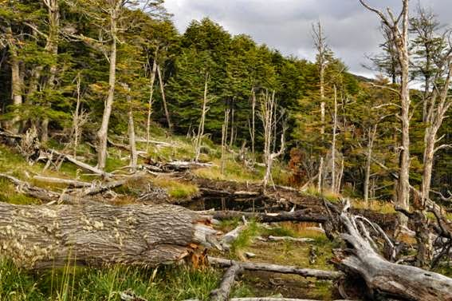

Gases de Efeito estufa e Aquecimento global
Portanto, o processo de eliminação das florestas favorece consideravelmente ao acúmulo de gases de efeito estufa .
Em segundo lugar, a devastação normalmente é feita em duas modalidades que por si só são causadores do aumento desses gases
Outra modalidade é a queimada aplicada após a derrubada para preparar o solo para agricultura e pecuária. A queimada também gera muitos gases fazendo aumentar o seu nível de concentração na atmosfera, sendo também um fator para o aquecimento global.
A preocupação com o meio ambiente não é mais uma dente várias questões, ela envolve tudo em nossa vida, porque a Terra é nosso lar comum e criar uma tarefa sustentável deve ser uma tarefa de todos.
Portanto, percebe-se que muitas vezes, uma prática diária tão inocente pode esconder uma verdadeira destruição à biodiversidade.
Riscos prejudicais causadas pelo Desmatamento .
O desmatamento é um dos mais graves problemas ambientais da atualidade, pois além de devastar as florestas e os recursos naturais, compromete o equilíbrio do planeta em seus diversos elementos, incluindo os ecossistemas, afetando gravemente também a economia e a sociedade. Dessa forma, toda vez que uma área florestal é removida, temos aí uma prática de desmatamento, que também pode ser chamado de “desflorestamento”.
Principais Causas do desmatamento.
-

- Expansão agropecuária.
- Atividade mineradora .
- Maior demanda por recursos naturais.
- Crescimento da urbanização.
- Aumento das queimadas.
Expansão agropecuária: o avanço das áreas agricultáveis e da fronteira agrícola provoca o avanço das atividades humanas sobre o meio natural, fazendo com que áreas inteiras de matas sejam substituídas por pastagens, campos agrícolas ou áreas rurais à espera de valorização financeira.
Atividade mineradora: a prática da mineração também é um dos grandes fatores responsáveis pela devastação das florestas, pois áreas inteiras são devastadas para a instalação de equipamentos e atividades de exploração de reservas dos mais diversos minérios, tais como o ouro, a prata, a bauxita (alumínio), o ferro, o zinco e muitos outros.
Maior demanda por recursos naturais: há, no mundo, um aumento exagerado do consumismo, com uma maior procura por matérias-primas e, consequentemente, por recursos naturais. Assim, os bens oferecidos pela natureza são explorados cada vez mais intensamente, com destaque para a madeira, o óleo de palma e demais elementos, que, quando retirados, provocam a destruição das florestas.
Crescimento da urbanização: com o incremento da urbanização tanto no Brasil como no mundo, as áreas verdes localizadas tanto nas áreas ao redor das cidades quanto dentro dos limites urbanos são removidas para a construção de moradias, empreendimentos, prédios, indústrias e muitos outras formas de intervenção do homem sobre o seu espaço.
aumento das queimadas: acidentais ou intencionais, as queimadas criminosas sobre áreas naturais vêm se alastrando, com frequentes notícias a respeito surgindo nos jornais e revistas. Em tempos de estiagem, a vegetação fica mais seca e o fogo alastra-se com maior facilidade, de forma que qualquer faísca, dependendo da localidade, pode provocar uma verdadeira catástrofe.
Portanto esses sao alguns fatores que são responsáveis pelo desmatamento , porém alem de todos esses fatores o Desmatamento pode caúsar danos irreversível para a População
São várias as consequências e impactos gerados pelo desmatamento, haja vista que a intervenção do homem sobre o meio natural fatalmente acarreta desequilíbrios. Dentre tais problemas, podemos citar:
Perda da biodiversidade: com a destruição das florestas, o habitat natural de muitas espécies torna-se escasso ou inexistente, contribuindo para a morte de muitos animais e até mesmo a extinção dos tipos endêmicos, aqueles que só se encontram em localidades restritas. Tal configuração traz problemas para a cadeia alimentar e pode impactar até atividades econômicas, tais como a caça e a pesca.
Extinção de rios: a remoção das florestas provoca a destruição, em alguns casos, de nascentes que alimentam os rios. Além disso, as áreas de encosta, nas margens dos cursos d'água, sofrem com o aumento da erosão, o que faz com que mais terra e rochas sejam “jogadas” no leito dos rios, o que provoca o seu enfraquecimento.
Efeitos climáticos: o clima e as temperaturas dependem das condições naturais. Muitas florestas contribuem fornecendo umidade para o ambiente, de forma que a retirada dessas implica a alteração do equilíbrio climático de muitas regiões, isso sem falar na intensificação do efeito estufa.
Perda de recursos naturais: os recursos naturais, mesmo aqueles renováveis, podem entrar em escassez com o desmatamento. É o caso da água, madeira, além de inúmeras matérias-primas medicinais retiradas a partir do extrativismo vegetal.
A real importância das florestas , e poque nos empenhar mais na defesa da sua existência!
A importância das florestas é enorme, pois suas raízes ajudam a evitar a erosão do solo. Suas folhas que cobrem o solo também ajudam a evitar a erosão e ainda permitem que a água das chuvas possa lentamente entrar no solo e ali permanecer por mais tempo, ao passo que a ausência de vegetação favorece o processo chamado de lixiviação
As florestas também têm uma função excelente de regular o clima, pois elas, pelo sistema da fotossíntese, absorvem o gás carbônico, que eliminamos com a respiração e aquele decorrente de inúmeras atividades humanas, que foram intensificadas no período pré-industrial e industrial.